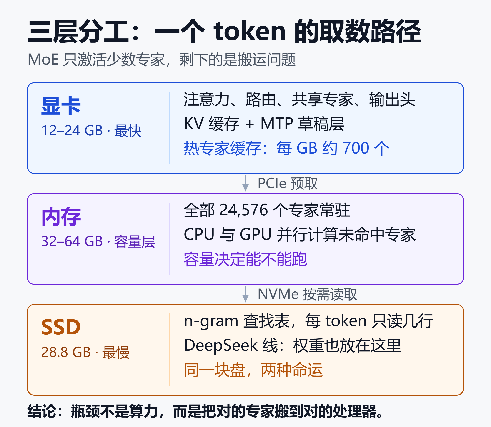
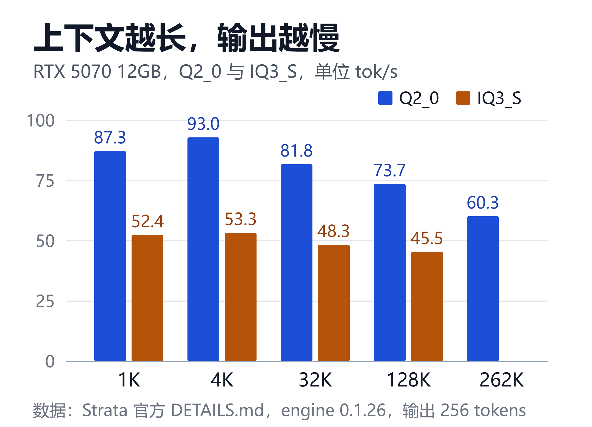

显存、内存、SSD 三层分工：爆火的 Strata 如何跑动 125B
引言：一组不太像真的数字
2026 年 9 月 24 日，一个叫 Strata 的仓库出现在 GitHub 上。
一个月后，它拿到 34,208 个 star、3,656 次 fork，发布 60 个版本，提交 4,196 次。
更扎眼的是它宣称的能力：一台 12GB 显存的游戏电脑，跑 125B 参数的 Qwen3.8-Flash-Next，输出 87 到 93 tok/s。
作为对照，这个模型的全精度权重需要两百多 GB 显存，通常只出现在数据中心的卡上。
这不是把模型“压缩到勉强能跑”那么简单。Strata 做的事情，是把一个 MoE 模型的稀疏性，翻译成一套存储层级方案：显存、内存、SSD 各管一段。
这篇文章拆三件事：它凭什么跑得动、速度从哪里来、以及这套方案的真实代价。
一、125B 卡住的地方，不是算力
Qwen3.8-Flash-Next 的结构是 24,576 个专家、48 层、原生 262K 上下文。每个 token 只激活其中 10 个专家。
也就是说，算力需求只有 125B 的一小部分，权重搬运却是全量的。
这也是 MoE 和稠密模型的分水岭。稠密模型砍参数就是砍能力，MoE 可以保留一个很大的参数池，每次只取一小块。
代价从算力转移到了存储和调度：谁的专家放得离计算单元更近，谁就更快。
传统有两条路：
- 全部权重放进显存：需要 80GB 以上，消费级显卡直接出局。
- 权重放内存、逐层计算：能跑，但内存带宽和 PCIe 会把速度压到个位数。
Strata 选了第三条：按“被访问的频率”把权重切成三层。
最热的专家留在显存，全部专家常驻内存，只读的查找表放 SSD。
二、三层分工：谁放什么
显卡：只放“每 token 都要用”的部分
注意力与 DeltaNet 混合层、门控残差、路由、共享专家、输出头、MTP 草稿层，以及 KV 缓存，全部常驻显存。
剩下的显存放“热专家缓存”。它会在对话过程中学习哪些专家被问得多，并动态替换。
一个经验值：每多 1GB 显存，大约多放 700 个专家。所以在这个场景里，显存容量比 GPU 型号更决定体验。
内存：全部 24,576 个专家
所有专家都固定在内存里。GPU 没命中的那部分，由 CPU 用 AVX-512 或 AVX2 内核就地计算，和 GPU 同时进行。
这是整套方案的关键：CPU 不是“降级替补”，而是和 GPU 并行工作的另一半算力。
代价是内存容量。64GB 才能舒服地跑 IQ3_S；48GB 只够 Q2_0 和 IQ2_XS；32GB 要退到 Coder 或 Gyro-S。
热专家缓存能起作用，前提是访问有局部性：同一类任务反复出现时，命中的专家集合高度重叠。
如果负载在几十种任务之间乱跳，命中率会掉向随机，速度也就退回内存带宽的水平。这一点决定了它更像“专用工作台”，而不是“通用服务器”。
SSD：只放一张查找表
SSD 上放的是 28.8GB 的 n-gram 表（Engram），每个 token 只读几行，走操作系统的页缓存。
注意，这和“把权重放 SSD”是两件事。
Strata 另一条产品线 DeepSeek V4.1-Flash 才是真正的 SSD 流式。
模型 239 到 274GB，12GB 显卡加 46GB 以上内存，输出只有个位数（RTX 5070 上约 5 tok/s）。
一个是“查表”，一个是“换页”，体验差一个数量级。

图里最值得记住的一句是：瓶颈不是算力，而是把对的专家搬到对的处理器。
三、速度从哪里来
三层分工解决了“装得下”，但没解决“够快”。后一半靠两个机制。
预填充：把长文切块读
提示词按最多 8,192 个 token 分块处理。当前层做注意力时，下一层的专家已经通过 PCIe 预取到显卡。
在 RTX 5070 上，Q2_0 的预填充速度从 1K 的 536 tok/s 升到 32K 的 2,171 tok/s，128K 仍有 2,107 tok/s。
换算成首 token 时间：4K 约 4 秒，32K 约 25 秒，128K 不到 2 分钟。
第一次对话之后，前缀会被缓存，后续追问只需要读新增部分。
所以第一次提问的体感，和后面几轮完全不同。
处理长文档时，比较现实的做法是先把材料喂进去，再在同一会话里追问；每次新建会话，都等于重新付一遍预填充的钱。
解码：先猜后验
模型自带一个 MTP 草稿层，一次猜最多 3 个 token，再由 48 层主模型一次性校验。
平均每次通过 2.4 到 3.2 个 token，官方给出的加速是 1.6 到 1.8 倍。
对代码修改、引用原文这类“重复上下文”场景，还有 prompt lookup：从原文里直接抽草稿，再快 6% 到 11%。
关键在于，草稿只负责提议，每个 token 仍由主模型确认，所以官方称输出质量不变。
加速比没有接近“一次猜三个”的理论上限，原因是校验仍要跑完整的 48 层，被拒的草稿等于白算。专家路由越分散，草稿和主模型的分歧越大，命中率就越低。
不同量化档位的实测
| 量化 | 1K | 32K |
|---|---|---|
| Q2_0 | 87.3 | 81.8 |
| IQ2_XS | 79.6 | 76.3 |
| IQ3_XXS | 61.9 | 58.5 |
| IQ3_S | 52.4 | 48.3 |
单位 tok/s，测试机为 RTX 5070 12GB、Ryzen 5 7600、64GB DDR5、Windows，官方引擎 0.1.26。
| 量化 | 128K | 262K |
|---|---|---|
| Q2_0 | 73.7 | 60.3 |
| IQ2_XS | 62.7 | 52.8 |
| IQ3_XXS | 49.0 | 未测 |
| IQ3_S | 45.5 | 未测 |
两件事值得注意：量化越低越快，但 2-bit 档位的质量争议最大；上下文从 1K 拉到 262K，速度只掉三成，比多数本地方案温和。
262K 一列里 IQ3_XXS 和 IQ3_S 是空的，说明高量化档在极限上下文下还没有完整数据，选型时别把它当成已验证的能力。

图里的结论用文字再说一遍：这条曲线掉得不算快，真正难的是首 token 的等待。
四、换一台机器，数字会变成什么样
官方只给了 RTX 5070 一个配置。社区报告补上了其他硬件：
| 硬件 | 配置 | 输出（tok/s） |
|---|---|---|
| RTX 4090 24GB | IQ3_S，262K | 75–82 |
| RX 9070 16GB | IQ3_XXS，131K | 58.7 |
| Strix Halo 128GB | IQ4_XS，8K | 59.2 |
| 2×TITAN RTX 24GB | IQ3_S，128K | 70.9–77.3 |
| RTX 3080，48GB | Coder | 约 30 |
同一模型、相近量化，不同硬件的表现差异很大。显存容量、内存通道数、PCIe 宽度，都会直接写进 tok/s。
要小心的是别把这些数字并排比较：4090 那组是 262K 上下文下的成绩，5070 的 87 是 1K。看起来像“大卡更慢”，其实只是测的不是同一件事。
这也解释了为什么项目方专门维护了一份社区基准文档，并要求报告写明量化、上下文、引擎版本和测试方法。
没有这些前提的“跑分”，基本没有可比性。
还有一个容易被忽略的变量：内存频率和通道数。CPU 要就地计算冷专家，内存带宽就是它的上限；双通道 DDR5 和四通道的差距，会直接写在 tok/s 上。
五、代价：三层分工不是免费的
1. 内存比显卡更贵
整套方案的前提是“全部专家在内存里”。这意味着 32GB 是底线，64GB 才舒服。
而 64GB DDR5 的成本，往往超过一张二手 12GB 显卡。
2. 长上下文仍然会掉速
RTX 5070 上 Q2_0 从 93 掉到 60，还算温和。换到更老的卡，曲线会陡得多。
社区 issue 里有一份 V100 的记录：Qwen3.6-35B-A3B 在 114K 上下文时从 109 tok/s 掉到 14.6，而 llama.cpp 在同机约 90。
3. 并发不是强项
设计目标是“一个人、一个 agent、一台机器”。
有人测过四路并发：首 token 时间是单路的 4.04 倍。专家换入换出会把并行请求重新串行化。
4. 低比特量化的质量要自己验
Q2_0 和 IQ2_XS 属于 2-bit 级别。有用户直接开贴说“模型不太行”，然后被二十多楼反驳。
共识大致是：IQ3_S 与 8-bit 参考模型的首 token 一致率约 87.7%；Coder 砍掉一半专家后，作者报告 SWE-bench 约为完整模型的 91%。
这些数字与任务强相关。写代码、长文推理、多语言，结论可能完全不同。
5. 稳定性和维护是真实风险
一个月里积累了 457 个未关闭 issue 和 520 个待合并 PR，覆盖 OOM、后端崩溃、Mac 花屏、长上下文卡死。
版本节奏是一天一个，60 个 release 意味着回归风险不低。
社区里讨论最多的一条，是“桌面 app 应该拆出独立仓库”（issue #3330，44 条评论）。核心用户担心 GUI 的 PR 会稀释引擎优化。
再加上 Windows 安装包尚未签名、终端安装是 curl | sh，这些都属于“能用，但要自己判断”的范畴。
6. 功耗与噪音
GPU 和 CPU 会同时满载，整机功耗明显高于普通的对话式推理。笔记本和小机箱要留意散热，长时间跑 agent 任务时，风扇噪音和降频都会影响体验。
六、放在坐标系里：它和别的路有什么不同
| 方案 | 强项 | 代价 |
|---|---|---|
| Strata | 单模型调优到极致 | 只围绕少数模型 |
| Gufo | 统一内存、并发强 | 绑定 Strix Halo |
| llama.cpp / Ollama | 模型库大、生态成熟 | 125B 需自己调参 |
| DwarfStar 4 / ninfer | 特定硬件深度优化 | 覆盖面窄 |
| 云 API | 免运维、边际成本低 | 数据出域、依赖网络 |
最贴近的对手是 Gufo。它同样支持 Qwen3.8 Flash-Next，思路却相反：不做三层搬运，直接把模型放进 128GB 统一内存。
官方标称的单用户峰值是 116.93 tok/s，8 路并发合计 245.81 tok/s，都启用了 MTP；仓库简介里另有一组更保守的 73.17。
同一台 Strix Halo 上，Strata 在 8K 上下文是 59.2，量化档位还低一档：IQ4_XS 对 Q4_K_XL。
差距的根源不是模型，而是统一内存不需要把专家搬过 PCIe。
代价是硬件被锁在 Ryzen AI MAX+ 395 上，系统以 Linux 为主，安装要么自己编译，要么跑容器镜像。
两条路的分界很清楚：显存不够，就用三层调度换容量；内存够大，就直接吃掉容量优势。
和 AirLLM 那种逐层流式加载相比，差别在并行度：逐层方案同一时刻只有一层参与计算，层与层之间靠预取掩盖 I/O。
Strata 把不同的专家分给不同的处理器，GPU 和 CPU 的活可以真正重叠。代价是它必须为每个模型单独调优，用通用性换速度。
还有一条容易被忽略的对比：成本。
DeepSeek V4.1-Flash 的 API 价格已经低到“自建永远回不了本”的程度，这是 2026 年 10 月多篇技术博客的共同判断。
所以本地部署的理由，不应该是省钱，而应该是：数据不出机器、断网可用、模型可改造、不受服务条款约束。
如果出发点只是“比 API 便宜”，这套方案大概率让人失望。
七、什么情况下值得上手
适合的人：
- 有 64GB 内存和 12GB 以上显存的 NVIDIA 卡，或新一代 AMD 卡。
- 想把 Claude Code、Codex CLI、OpenCode 指向本地端点。
- 对代码、文档不出内网有硬要求。
- 愿意接受“折腾半小时、偶尔踩坑”的成本。
不适合的人：
- 内存只有 16 到 32GB。
- 需要多人并发或 7×24 服务。
- 追求零维护。
- 主要目的是省钱。
如果内存刚好卡在 48GB 这条线上，按内存选档位比按显存选更稳：64GB 配 12GB 显存选 IQ3_S，48GB 选 IQ2_XS，再往下只能考虑 Coder 或更小的模型。
显存多出来的一两 GB，只是让热专家缓存变大，边际收益远不如内存不够时那么致命。
上手时建议先看计划，再下载：
strata launch --plan --family qwen --model iq2_xs
确认内存、显存、磁盘都够，再执行真正的安装。接工具用 strata connect，自测用 strata bench run。
它的价值不在于“让每个人都能跑 125B”，而在于把“能不能跑”这个问题，变成了“值不值得跑”。
小结
Strata 的技术路线可以压缩成一句话：用 MoE 的稀疏性，把模型拆成三层存储，让 CPU 和 GPU 同时干活。
它确实把 125B 拉进了消费级硬件，也确实跑出了可用的速度。但它没有消除物理约束：内存容量、SSD 带宽、单机并发，一个都没少。
所以更准确的判断是：它证明了这条路可行，还没有证明这条路稳定。
接下来值得观察的，不是参数还能不能更大，而是 issue 数量能不能降下来、版本节奏能不能慢下来、引擎和 app 能不能各归其位。
免责声明
本文数据来自 Strata 官方文档、GitHub issue 与社区基准报告，测试条件与版本各不相同，未做独立复现。
不同硬件、量化、上下文长度下的结果可能显著不同，请以自己的实测为准。
参考来源
- GitHub —— Niko1221/Strata 仓库主页
- GitHub —— Strata 中文 README
- GitHub —— Strata 工作原理说明
- GitHub —— Strata 引擎与服务器技术参考
- GitHub —— Strata 模型选择与内存需求
- GitHub —— Strata 社区基准报告
- GitHub —— Strata 安全与隐私说明
- GitHub Issue #3330 —— 建议将 app 与引擎拆分为两个仓库
- GitHub Issue #29 —— RTX 4090 性能与卡死问题报告
- GitHub Issue #935 —— 关于模型质量的争论
- GitHub Issue #2275 —— 长上下文多用户并发测试
- GitHub Issue #2464 —— Qwen3.6 在 V100 上的上下文掉速
- GitHub —— gufo-org/gufo：面向 Strix Halo 的本地推理引擎
- Hacker News —— Run Qwen 3.8 Flash Next on consumer hardware
- 小众软件 —— Strata 0.2.3 更新：聊天太长？现在会自动压缩了
- PromptQuorum —— Strata 评测：在游戏电脑上运行 125B 开源模型
- Jono's Corner —— Why Isn't The Industry Freaking Out About DeepSeek 4.1 Flash